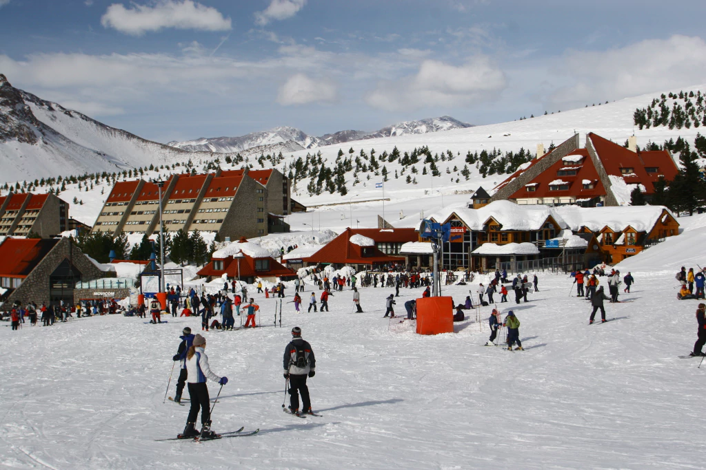

Sky en Las Leñas

En pleno corazón de la Cordillera de los Andes, en la provincia de Mendoza y a tan sólo 1.200 km de Buenos
Aires, se encuentra el centro de ski número 1 de América Latina: Las Leñas. La magia de este centro de ski
de alta montaña es el resultado de la combinación entre naturaleza, confort, diversión, aventura y relax.
Su base está a 2.240 metros de altura sobre el nivel del mar y su cumbre a 3.430 metros. Está ubicado a 80 km
de Malargüe, 200 km de San Rafael, 342 km de Mendoza, 1.200 km de Buenos Aires, 800 km de Córdoba y 1.000 km
de Rosario.
Este complejo turístico internacional brinda unas vacaciones inolvidables para todos los amantes del ski y el
snowboard. Cuenta con una calidad de nieve insuperable, gastronomía internacional e instalaciones hoteleras
de primer nivel, dentro de un marco de seguridad y tranquilidad para toda la familia. Gracias a su ubicación
geográfica, Las Leñas ofrece una prolongada temporada de nieve que se extiende desde el mes de Junio hasta
Septiembre inclusive.
Tipo de tour: Grupal
Días de salida: Todos los días
Horarios: Salida 01:45 a.m. – Llegada a Las Leñas 07:30 a.m. – Regreso 05:30 p.m. – Llegada a Mendoza 10:30
p.m.
Idiomas: Español, Ingles, Portugues